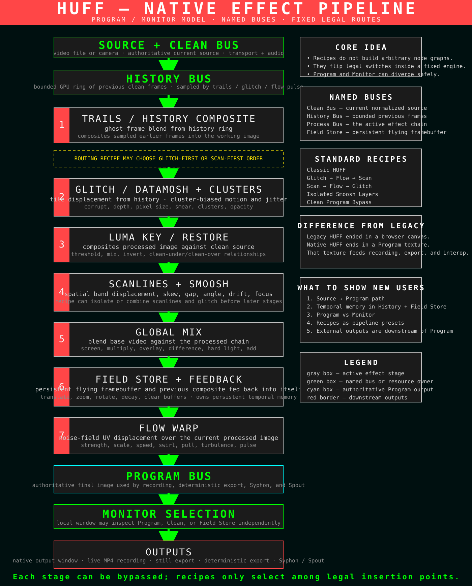

The current HUFF image is produced by several distinct effect families. They share one constrained renderer, but each has a different state model and artistic role.
Effect pipeline overview


Glitch: historical tile stamping
The glitch system reads rectangles from the GPU history ring and stamps them into the persistent effect image. Controls determine temporal depth, depth scatter, corruption density, drift, tile size, opacity, jitter, smear length and angle, speed, and base offset.
Why it is not merely random rectangles
The source pixels come from older frames, and their destination is a persistent image. The result can retain motion and accumulate transformation rather than disappearing after one frame.
Clusters: persistent moving bodies
Cluster mode groups tiles around persistent centers. Centers have velocity, steering, inertia, speed variance, pulse, coherence, breathing, spread, minimum radius, spatial gaps, and Bounce/Wrap boundary behavior. This creates recognizable moving constellations rather than a fresh random distribution every frame.
Scanlines: structured band geometry
Scanlines are native image bands with angle, spin, band count, radius/size, focus, shift, skew, drift, placement, zoom, zoom mode, speed, gap, and alpha. They can behave as content movement, pattern movement, or both.
Layer Priority
Scan, Glitch, Neutral, and Pulse decide which layer is drawn or treated as dominant where their outputs interact. This is a routing decision disguised as a compact performance control, which is why Milestone 19 incorporates it into recipe descriptions.
Smoosh
Smoosh isolates the glitch and scanline layers and combines them through one of sixteen Canvas-style blend modes: Screen, Add, Lighten, Color Dodge, Multiply, Darken, Color Burn, Overlay, Soft Light, Hard Light, Difference, Exclusion, Hue, Saturation, Color, and Luminosity. Amount and invert controls change the final relationship.
Luma Key
Luma Key derives a live mask from luminance and uses it to reveal or restore Clean imagery inside the processed image. The A/B threshold relationship, mix, and inversion define which regions are affected. It is a mask and restoration tool, not a complete multi-input keyer.
Global Mix
Global Mix blends a selected image relationship at one of four insertion stages: before feedback, after feedback, after Flow, or final. Its position is as important as its blend mode because the selected stage determines whether the mixed image enters recursive memory or only affects the final composite.
Flow
Flow is a warp/advection system with strength, scale, speed, pulse, trigger, impulse/pull, swirl, turbulence, spread, and carry. Its target can be Final, Glitch, or Scan, changing which intermediate image is warped.
Feedback
Feedback mixes a transformed prior image into the current process. Amount and persistence control energy and decay; X/Y translation, scale, and rotation create drifting, zooming, and rotating recursion.
Calibration status
The legacy parameter contract is preserved exactly for 87 mapped controls, but numerical equality does not guarantee identical visual behavior. Noise functions, timing, texture sampling, blend math, color space, and GPU precision can all change the perceived result. The future refinement pass should judge artistic behavior, not only numeric parity.